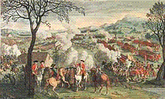

The Chisholm
'Stoigh leam fein an Siosalach
Text Unknown
Captain Simon Fraser Collection N° 117
Sequenced by Christian Souchon


|
"Though the editor has applied the name of the Laird of Chisholm to this air, he is not positive but it may belong to some other branch of his family, probably a handsome young fellow, killed in Culloden, whose widow composes an
air to his memory
, introduced in this work"
.Fraser (The Airs and Melodies Peculiar to the Highlands of Scotland and the Isles), 1874; No. 117, pg. 46
|
"Bien que l'auteur ait donné à cette mélodie le nom du Laird de Chisholm, il n'est pas certain de cette attribution. Il peut s'agir d'une autre branche de la famille, probablement, le beau jeune homme tombé à Culloden, dont la veuve a composé un
chant à sa mémoire
qui figure dans le présent recueil."
. Fraser (Les Airs et Mélodies propres aux Hautes Terres et aux Iles d'Ecosse), 1874; No. 117, pg. 46.
|